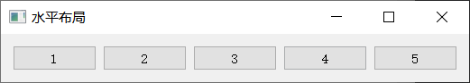
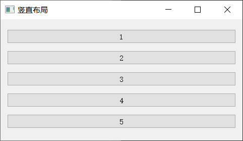
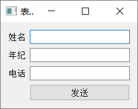
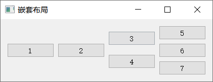

<!DOCTYPE lake>
<h2 data-lake-id="R17JA" data-lake-index-type="2" id="R17JA"><span data-lake-id="u2e1a4fe6" id="u2e1a4fe6">布局简介</span></h2><p data-lake-id="ua28026ca" id="ua28026ca"><span data-lake-id="u7a1fc5c3" id="u7a1fc5c3">一个pyqt窗口中可以有多个控件。所谓布局,指的就是多个控件在窗口中的展示方式</span></p><p data-lake-id="u1d4aa3cc" id="u1d4aa3cc"><span data-lake-id="u1076771e" id="u1076771e">布局方式大致分为:</span></p><ul list="u30c1d9f3"><li data-lake-id="u0eec6e39" fid="u2767031a" id="u0eec6e39"><span data-lake-id="ub84a7737" id="ub84a7737">水平布局</span></li><li data-lake-id="u3a168122" fid="u2767031a" id="u3a168122"><span data-lake-id="u2a1bbe6d" id="u2a1bbe6d">竖直布局</span></li><li data-lake-id="u58171da7" fid="u2767031a" id="u58171da7"><span data-lake-id="u98937ac1" id="u98937ac1">网格布局</span></li><li data-lake-id="ue7a2a784" fid="u2767031a" id="ue7a2a784"><span data-lake-id="u72963438" id="u72963438">表单布局</span></li></ul><h2 data-lake-id="UI0U4" id="UI0U4"><span data-lake-id="uba907395" id="uba907395">2. 水平布局QHBoxLayout</span></h2><p data-lake-id="uc0cb50fd" id="uc0cb50fd"><span data-lake-id="u789b5391" id="u789b5391">Horizontal Layout</span></p><p data-lake-id="u8997d5b0" id="u8997d5b0"><span data-lake-id="u908317a4" id="u908317a4">水平布局中,是按照从左往右的顺序添加控件的</span></p><p data-lake-id="ucad57998" id="ucad57998"></p><p data-lake-id="u74b830d1" id="u74b830d1"><span data-lake-id="ubf1f44bc" id="ubf1f44bc">代码示例：</span></p><span class="yuque-card-unsupported">[codeblock]</span><h2 data-lake-id="HIIHg" id="HIIHg"><span data-lake-id="u32b4bade" id="u32b4bade">3. 竖直布局QVBoxLayout</span></h2><p data-lake-id="uf0f33ca3" id="uf0f33ca3"><span data-lake-id="u7df03dce" id="u7df03dce">Vertical Layout</span></p><p data-lake-id="ud490c451" id="ud490c451"><span data-lake-id="u55fd4777" id="u55fd4777">竖直布局采用QVBoxLayout,是采用从上往下的方式添加控件的</span></p><p data-lake-id="u92120a55" id="u92120a55"><span data-lake-id="u44b9c579" id="u44b9c579"><br/></span><span data-lake-id="ue9cc77c6" id="ue9cc77c6">代码示例：</span></p><span class="yuque-card-unsupported">[codeblock]</span><p data-lake-id="uc2876b26" id="uc2876b26"><br/></p><h2 data-lake-id="Lh8hY" id="Lh8hY"><span data-lake-id="u989e84e4" id="u989e84e4">4. 表单布局QFormLayout</span></h2><p data-lake-id="u8401dbc6" id="u8401dbc6"><span data-lake-id="uc7bcc0de" id="uc7bcc0de">表单布局是</span><code data-lake-id="ubc37614c" id="ubc37614c"><span data-lake-id="u6417cd80" id="u6417cd80">label-field</span></code><span data-lake-id="uf8e89c75" id="uf8e89c75">式的表单布局，顾名思义就是实现表单方式的布局</span></p><p data-lake-id="u13dcfea9" id="u13dcfea9"><span data-lake-id="ue427c6b9" id="ue427c6b9"><br/></span><span data-lake-id="u150084e3" id="u150084e3">代码示例：</span></p><span class="yuque-card-unsupported">[codeblock]</span><p data-lake-id="uc6ba1794" id="uc6ba1794"><br/></p><h2 data-lake-id="fgsAn" id="fgsAn"><span data-lake-id="u812c039f" id="u812c039f">5. 布局嵌套</span></h2><p data-lake-id="u7d32b1da" id="u7d32b1da"><span data-lake-id="u3249d9ac" id="u3249d9ac">通过布局嵌套可以实现更加复杂的布局</span></p><p data-lake-id="uab02f0bf" id="uab02f0bf"></p><p data-lake-id="u55c3c93c" id="u55c3c93c"><span data-lake-id="u54539596" id="u54539596">代码示例：</span></p><span class="yuque-card-unsupported">[codeblock]</span><p data-lake-id="ud9ca9442" id="ud9ca9442"><br/></p>